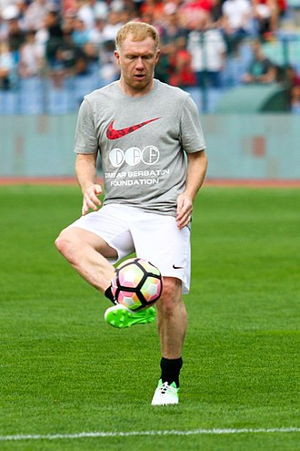
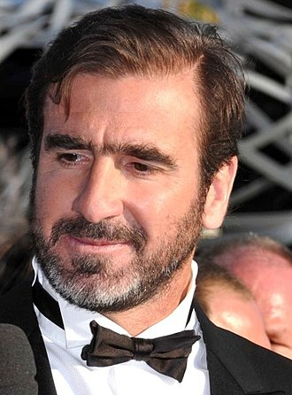
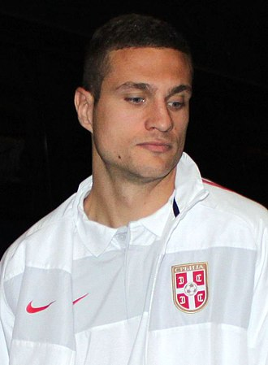
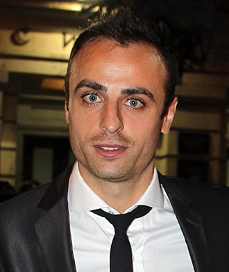

Return Home
My Favourite Past Players
- Paul Scholes

Link to Paul Scholes Wikipedia Page
- Eric Cantona

Link to Eric Cantona Wikipedia Page
- Nemanja Vidic

Link to Nemanja Vidic Wikipedia Page
- Wayne Rooney
 Link to Wayne Rooney Wikipedia Page
Link to Wayne Rooney Wikipedia Page
- Dimitar Berbatov

Link to Eric Cantona Wikipedia Page